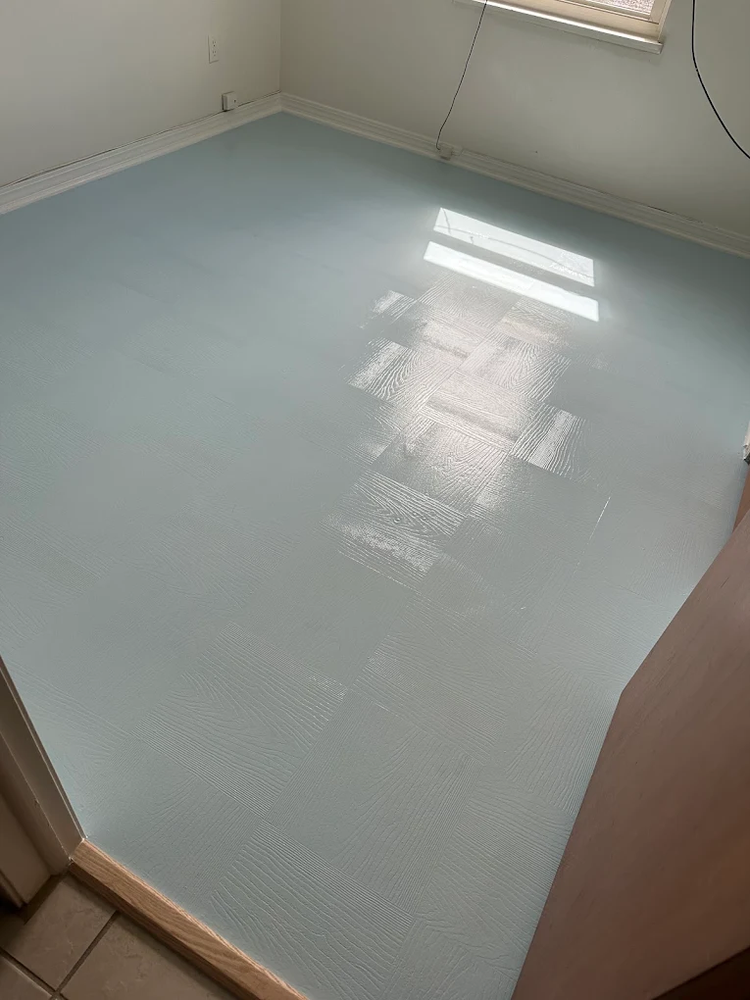

Confirm northern coverage
Provide the street or ZIP code before relying on the county name; southern St. Johns County may be outside the regular route.
Northern St. Johns County service area
JW’s published coverage includes northern St. Johns County. For painting, flooring or coating work, call with the exact address so the travel boundary and current schedule can be confirmed before an estimate is arranged.
Plan for the property
St. Johns County extends well beyond JW’s regular northern service area, so the address matters more than the county label. Ponte Vedra Beach, Palm Valley, Nocatee, Fruit Cove and St. Johns are the communities highlighted here. Properties farther south should be confirmed directly rather than assumed to be inside the route.
Before the estimate
Provide the street or ZIP code before relying on the county name; southern St. Johns County may be outside the regular route.
If the property has gate procedures, work-hour rules or parking restrictions, include them when arranging the visit.
Mention whether the surface is near salt air, direct sun, irrigation overspray or a wet-use area such as a pool deck or lanai.
For interior work, explain which rooms must remain usable so painting, flooring and cure or dry time can be staged realistically.
Connected finish work
Northern St. Johns County includes coastal areas and communities near the St. Johns River. Exposure can influence paint wear, concrete condition and moisture at floors, but a ZIP code alone cannot diagnose a surface. JW needs the material, visible condition and location of the work to decide what should be inspected before recommending preparation or a finish.

Questions before an estimate
These answers are planning guidance, not a diagnosis of a surface that has not been inspected.
The published service area is northern St. Johns County, not an automatic promise of countywide travel. Call (904) 233-2110 with the exact address to confirm coverage.
They are among the northern St. Johns County communities listed on this page. Scheduling still depends on the address and project scope.
Pool-deck and patio coatings are among the services described on this site. The existing surface, drainage, cracks, prior coating and desired traction all need to be discussed before a system is selected.
Yes. Painting, flooring and epoxy coatings can be raised in the same estimate request. The final scope should make the sequence and included preparation clear.
Start the conversation
Share the ZIP code, surface, visible condition and work you need. JW can confirm whether the location and scope fit the current route.